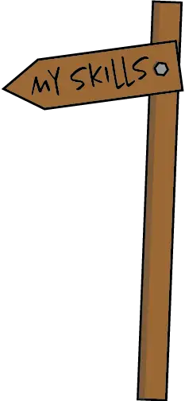

Jeg er en 28 år gammel animation- og design entusiast. Jeg har studeret forskellige former for design i ca. 10 år. I den tid har jeg studeret: game design - både digital og board, VFX, animation, web-design og 3D graphic design.
-

-
Hvad jeg kan
Programmer, jeg har arbejdet med:
3D modeling: 3Ds Max, Blender, Unity, Zbrush, Mudbox.
koding: Visual Studio.
foto manipulation: Adobe After effects, Photoshop.
Website prototyper: XD, Figma.
Video editing: Premiere Pro.
Lyd: Ableton, Audition, Audacity.
Andet: Illustrator, InDesign.
- 